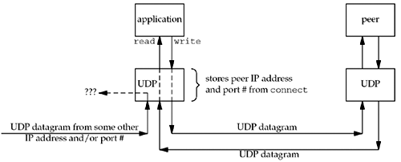
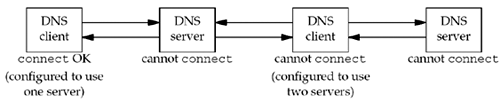

<!DOCTYPE html>
<html>

<head>

<meta charset="utf-8">
<meta name="viewport" content="width=device-width, initial-scale=1.0, user-scalable=yes">
<title>getty</title>


<style type="text/css">
*{margin:0;padding:0;}
body {
	font:13.34px helvetica,arial,freesans,clean,sans-serif;
	color:black;
	line-height:1.4em;
	background-color: #F8F8F8;
	padding: 0.7em;
}
p {
	margin:1em 0;
	line-height:1.5em;
}
table {
	font-size:inherit;
	font:100%;
	margin:1em;
}
table th{border-bottom:1px solid #bbb;padding:.2em 1em;}
table td{border-bottom:1px solid #ddd;padding:.2em 1em;}
input[type=text],input[type=password],input[type=image],textarea{font:99% helvetica,arial,freesans,sans-serif;}
select,option{padding:0 .25em;}
optgroup{margin-top:.5em;}
pre,code{font:12px Monaco,"Courier New","DejaVu Sans Mono","Bitstream Vera Sans Mono",monospace;}
pre {
	margin:1em 0;
	font-size:12px;
	background-color:#eee;
	border:1px solid #ddd;
	padding:5px;
	line-height:1.5em;
	color:#444;
	overflow:auto;
	-webkit-box-shadow:rgba(0,0,0,0.07) 0 1px 2px inset;
	-webkit-border-radius:3px;
	-moz-border-radius:3px;border-radius:3px;
}
pre code {
	padding:0;
	font-size:12px;
	background-color:#eee;
	border:none;
}
code {
	font-size:12px;
	background-color:#f8f8ff;
	color:#444;
	padding:0 .2em;
	border:1px solid #dedede;
}
img{border:0;max-width:100%;}
abbr{border-bottom:none;}
a{color:#4183c4;text-decoration:none;}
a:hover{text-decoration:underline;}
a code,a:link code,a:visited code{color:#4183c4;}
h2,h3{margin:1em 0;}
h1,h2,h3,h4,h5,h6{border:0;}
h1{font-size:170%;border-top:4px solid #aaa;padding-top:.5em;margin-top:1.5em;}
h1:first-child{margin-top:0;padding-top:.25em;border-top:none;}
h2{font-size:150%;margin-top:1.5em;border-top:4px solid #e0e0e0;padding-top:.5em;}
h3{margin-top:1em;}
hr{border:1px solid #ddd;}
ul{margin:1em 0 1em 2em;}
ol{margin:1em 0 1em 2em;}
ul li,ol li{margin-top:.5em;margin-bottom:.5em;}
ul ul,ul ol,ol ol,ol ul{margin-top:0;margin-bottom:0;}
blockquote{margin:1em 0;border-left:5px solid #ddd;padding-left:.6em;color:#555;}
dt{font-weight:bold;margin-left:1em;}
dd{margin-left:2em;margin-bottom:1em;}
sup {
    font-size: 0.83em;
    vertical-align: super;
    line-height: 0;
}
kbd {
  display: inline-block;padding: 3px 5px;font-size: 11px;line-height: 10px;color: #555;vertical-align: middle;background-color: #fcfcfc;border: solid 1px #ccc;border-bottom-color: #bbb;border-radius: 3px;box-shadow: inset 0 -1px 0 #bbb;
}
* {
	-webkit-print-color-adjust: exact;
}
@media screen and (min-width: 914px) {
    body {
        width: 854px;
        margin:0 auto;
    }
}
@media print {
	table, pre {
		page-break-inside: avoid;
	}
	pre {
		word-wrap: break-word;
	}
}
</style>


</head>

<body>

<h2 id="toc_0">getty ????</h2>

<hr>

<p><em>written by Alex Stocks on 2018/03/19</em></p>

<h3 id="toc_1">0 说明</h3>

<hr>

<p><a href="https://github.com/alexstocks/getty">getty</a>是一个go语言实现的网络层引擎，可以处理TCP/dup/websocket三种网络协议。</p>

<p>2016年6月我在上海做一个即时通讯项目时，接口层的底层网络驱动是当时的同事<a href="https://github.com/sanbit">sanbit</a>写的，原始网络层实现了TCP Server，其命名规范学习了著名的netty。当时这个引擎比较简洁，随着我对这个项目的改进这个网络层引擎也就随之进化了（添加了TCP Client、抽象出了 TCP connection 和 TCP session），至2016年8月份（又添加了websocket）其与原始实现已经大异其趣了，征得原作者和相关领导同意后就放到了github上。</p>

<p>将近两年的时间我不间断地对其进行改进，年齿渐增但记忆速衰，觉得有必要记录下一些开发过程中遇到的问题以及解决方法，以备将来回忆之参考。</p>

<h3 id="toc_2">1 UDP connection</h3>

<hr>

<p>2018年3月5日 起给 getty 添加了UDP支持。</p>

<h4 id="toc_3">1.1 UDP connect</h4>

<hr>

<p>UDP自身分为unconnected UDP和connected UDP两种，connected UDP的底层原理见下图。</p>

<p></p>

<p>当一端的UDP endpoint调用connect之后，os就会在内部的routing table上把udp socket和另一个endpoint的地址关联起来，在发起connect的udp endpoint端建立起一个单向的连接四元组：发出的datagram packet只能发往这个endpoint（不管sendto的时候是否指定了地址）且只能接收这个endpoint发来的udp datagram packet（如图???发来的包会被OS丢弃）。</p>

<p>UDP endpoint发起connect后，OS并不会进行TCP式的三次握手，操作系统共仅仅记录下UDP socket的peer udp endpoint 地址后就理解返回，仅仅会核查对端地址是否存在网络中。</p>

<p>至于另一个udp endpoint是否为connected udp则无关紧要，所以称udp connection是单向的连接。如果connect的对端不存在或者对端端口没有进程监听，则发包后对端会返回ICMP “port unreachable” 错误。</p>

<p>如果一个POSIX系统的进程发起UDP write时没有指定peer UDP address，则会收到ENOTCONN错误，而非EDESTADDRREQ。</p>

<p></p>

<p>一般发起connect的为 UDP client，典型的场景是DNS系统，DNS client根据/etc/resolv.conf里面指定的DNS server进行connect动作。</p>

<p>至于 UDP server 发起connect的情形有 TFTP，UDP client 和 UDP server 需要进行长时间的通信， client 和 server 都需要调用 connect 成为 connected UDP。</p>

<p>如果一个 connected UDP 需要更换 peer endpoint address，只需要重新 connect 即可。</p>

<h4 id="toc_4">1.2 connected UDP 的性能</h4>

<hr>

<p>connected UDP 的优势详见参考文档1。假设有两个 datagram 需要发送，unconnected UDP 的进行 write 时发送过程如下：</p>

<div><pre><code class="language-none">* Connect the socket
* Output the first datagram
* Unconnect the socket
* Connect the socket
* Output the second datagram
* Unconnect the socket</code></pre></div>

<p>每发送一个包都需要进行 connect，操作系统到 routine table cache 中判断本次目的地地址是否与上次一致，如果不一致还需要修改 routine table。</p>

<p>connected UDP 的两次发送过程如下：</p>

<div><pre><code class="language-none">* Connect the socket
* Output first datagram
* Output second datagram</code></pre></div>

<p>这个 case 下，内核只在第一次设定下虚拟链接的 peer address，后面进行连续发送即可。所以 connected UDP 的发送过程减少了 1/3 的等待时间。</p>

<p>2017年5月7日 我曾用 <a href="https://github.com/alexStocks/python-practice/blob/master/tcp_udp_http_ws/udp/client.py">python 程序</a> 对二者之间的性能做过测试，如果 client 和 server 都部署在本机，测试结果显示发送 100 000 量的 UDP datagram packet 时，connected UDP 比 unconnected UDP 少用了 2 / 13 的时间。</p>

<p>这个测试的另一个结论是：不管是 connected UDP 还是 unconnected UDP，如果启用了 SetTimeout，则会增大发送延迟。</p>

<h4 id="toc_5">1.3 Go UDP</h4>

<hr>

<p>Go 语言 UDP 编程也对 connected UDP 和 unconnected UDP 进行了明确区分，参考文档2 详细地列明了如何使用相关 API，根据这篇文档个人也写一个 <a href="https://github.com/alexstocks/go-practice/blob/master/udp-tcp-http/udp/connected-udp.go">程序</a> 测试这些 API，测试结论如下：   </p>

<div><pre><code class="language-none">* 1 connected UDP 读写方法是 Read 和 Write；
* 2 unconnected UDP 读写方法是 ReadFromUDP 和 WriteToUDP（以及 ReadFrom 和 WriteTo)；
* 3 unconnected UDP 可以调用 Read，只是无法获取 peer addr；
* 4 connected UDP 可以调用 ReadFromUDP（填写的地址会被忽略）
* 5 connected UDP 不能调用 WriteToUDP，”即使是相同的目标地址也不可以”，否则会得到错误 “use of WriteTo with pre-connected connection”；
* 6 unconnected UDP 不能调用 Write, “因为不知道目标地址”, error:”write: destination address requiredsmallnestMBP:udp smallnest”；
* 7 connected UDP 可以调用 WriteMsgUDP，但是地址必须为 nil；
* 8 unconnected UDP 可以调用 WriteMsgUDP，但是必须填写 peer endpoint address。</code></pre></div>

<p>综上结论，读统一使用 ReadFromUDP，写则统一使用 WriteMsgUDP。</p>

<h4 id="toc_6">1.4 Getty UDP</h4>

<hr>

<p>版本 v0.8.1 Getty 中添加 connected UDP 支持时，其连接函数 <a href="https://github.com/alexstocks/getty/blob/master/client.go#L141">dialUDP</a> 这是简单调用了 net.DialUDP 函数，导致昨日（20180318 22:19 pm）测试的时候遇到一个怪现象：把 peer UDP endpoint 关闭，local udp endpoint 进行 connect 时 net.DialUDP 函数返回成功，然后 lsof 命令查验结果时看到确实存在这个单链接：</p>

<div><pre><code class="language-none">COMMAND     PID USER   FD   TYPE             DEVICE SIZE/OFF NODE NAME
echo_clie 31729 alex    9u  IPv4 0xa5d288135c97569d      0t0  UDP localhost:63410-&gt;localhost:10000</code></pre></div>

<p>然后当 net.UDPConn 进行 read 动作的时候，会得到错误 “read: connection refused”。</p>

<p>于是模仿C语言中对 TCP client connect 成功与否判断方法，对 <a href="https://github.com/alexstocks/getty/blob/master/client.go#L141">dialUDP</a> 改进如下：</p>

<div><pre><code class="language-none">* 1 net.DialUDP 成功之后，判断其是否是自连接，是则退出；
* 2 connected UDP 向对端发送一个无用的 datagram packet【”ping”字符串，对端会应其非正确 datagram 而丢弃】，失败则退出；
* 3 connected UDP 发起读操作，如果对端返回 “read: connection refused” 则退出，否则就判断为 connect 成功。</code></pre></div>

<h3 id="toc_7">2 Compression</h3>

<hr>

<p>去年给 getty 添加了 TCP/Websocket compression 支持，Websocket 库使用的是 <a href="https://github.com/gorilla/websocket/">gorilla/websocket</a>，<a href="https://godoc.org/golang.org/x/net/websocket">Go 官网</a>也推荐这个库，因为自 <code>This package(&quot;golang.org/x/net/websocket&quot;) currently lacks some features</code>。</p>

<h4 id="toc_8">2.1 TCP compression</h4>

<hr>

<p>最近在对 Websocket compression 进行测试的时候，发现 CPU 很容易就跑到 100%，且程序启动后很快就 panic 退出了。</p>

<p>根据 panic 信息提示查到 <a href="https://github.com/gorilla/websocket/blob/master/conn.go#L1018">gorilla/websocket/conn.go:ReadMsg</a> 函数调用 <a href="https://github.com/gorilla/websocket/blob/master/conn.go#L928">gorilla/websocket/conn.go:NextReader</a> 后就立即 panic 退出了。panic 的 <code>表层原因</code> 到是很容易查明：</p>

<ul>
<li>1 <a href="https://github.com/gorilla/websocket/blob/master/conn.go#L768">gorrilla/websocket:Conn::advanceFrame</a> 遇到读超时错误（io timeout）;</li>
<li>2 <a href="https://github.com/gorilla/websocket/blob/master/conn.go#L941">gorrilla/websocket:ConnConn.readErr</a>记录这个error；</li>
<li>3 <a href="https://github.com/gorilla/websocket/blob/master/conn.go#L959">gorilla/websocket/conn.go:Conn::NextReader</a>开始读取之前则<a href="https://github.com/gorilla/websocket/blob/master/conn.go#L938">检查这个错误</a>，如以前发生过错误则不再读取 websocket frame，并对<a href="https://github.com/gorilla/websocket/blob/master/conn.go#L957">gorrilla/websocket:ConnConn.readErr累积计数</a>；</li>
<li>4 <a href="https://github.com/gorilla/websocket/blob/master/conn.go#L958">当gorrilla/websocket:ConnConn.readErr数值大于 1000</a> 的时候，程序就会panic 退出。</li>
</ul>

<p>但是为何发生读超时错误则毫无头绪。</p>

<p>2018/03/07 日测试 TCP compression 的时候发现启动 compression 后，程序 CPU 也会很快跑到 100%，进一步追查后发现函数 <a href="https://github.com/alexstocks/getty/blob/master/conn.go#L228">getty/conn.go:gettyTCPConn::read</a> 里面的 log 有很多 “io timeout” error。当时查到这个错误很疑惑，因为我已经在 TCP read 之前进行了超时设置【SetReadDeadline】，难道启动 compression 会导致超时设置失效？</p>

<p>于是在 <a href="https://github.com/alexstocks/getty/blob/master/conn.go#L228">getty/conn.go:gettyTCPConn::read</a> 中添加了一个逻辑：启用 TCP compression 的时不再设置超时时间【默认情况下tcp connection是永久阻塞的】，CPU 100% 的问题很快就得到了解决。</p>

<p>至于为何 <code>启用 TCP compression 会导致 SetDeadline 失效</code>，囿于个人能力和精力，待将来追查出结果后再在此补充之。</p>

<h4 id="toc_9">2.2 Websocket compression</h4>

<hr>

<p>TCP compression 的问题解决后，个人猜想 Websocket compression 程序遇到的问题或许也跟 <code>启用 TCP compression 会导致 SetDeadline 失效</code> 有关。</p>

<p>于是借鉴 TCP 的解决方法，在 <a href="https://github.com/alexstocks/getty/blob/master/conn.go#L527">getty/conn.go:gettyWSConn::read</a> 直接把超时设置关闭，然后 CPU 100% 被解决，且程序运转正常。</p>

<h2 id="toc_10">总结</h2>

<hr>

<p>本文总结了 getty 近期开发过程中遇到的一些问题，囿于个人水平只能给出目前自认为最好的解决方法【如何你有更好的实现，请留言】。</p>

<p>随着getty若有新的 improvement 或者新 feature，我会及时补加此文。</p>

<p>此记。</p>

<h2 id="toc_11">参考文档</h2>

<hr>

<ul>
<li>1 <a href="http://www.masterraghu.com/subjects/np/introduction/unix_network_programming_v1.3/ch08lev1sec11.html">connect Function with UDP</a></li>
<li>2 <a href="http://colobu.com/2016/10/19/Go-UDP-Programming/">深入Go UDP编程</a></li>
</ul>

<h2 id="toc_12">扒粪者-于雨氏</h2>

<blockquote>
<p>于雨氏，2018/03/19，初作此文于帝都海淀西二旗。</p>
</blockquote>


<!-- Gitalk start -->
<link rel="stylesheet" href="https://unpkg.com/gitalk@latest/dist/gitalk.css">
<script src="https://unpkg.com/gitalk@latest/dist/gitalk.min.js"></script>
<div id="gitalk-container"></div>
<script type="text/javascript">
var gitalk = new Gitalk({
	clientID: '6211d8b94a8106bed6b0',
	clientSecret: 'bf77ca26c237eabbd45169e01bf03a5e96a1b26f',
	repo: 'alexstocks.github.io',
	owner: 'AlexStocks',
	admin: ['AlexStocks'],
	id: window.location.pathname,
	distractionFreeMode: true
});
gitalk.render('gitalk-container');
</script>
<!-- Gitalk end -->


</body>

</html>
